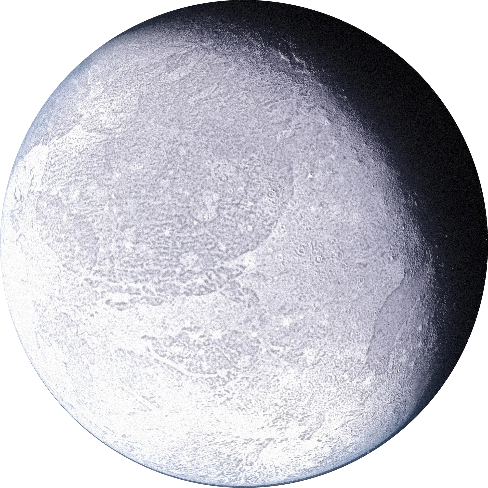

Planet Kerdil Masif Cakram Tersebar
Eris adalah planet kerdil paling masif dan terbesar kedua di luar orbit Neptunus. Ditemukan pada tahun 2005 di kawasan cakram tersebar (*scattered disc*), penemuan Eris memicu perdebatan sengit di komunitas astronomi dunia hingga berujung pada penetapan redefinisi resmi istilah "planet" oleh *International Astronomical Union* (IAU) pada tahun 2006. Memiliki orbit yang sangat lonjong (*eksentrik*), Eris membutuhkan waktu 558 tahun untuk sekali mengelilingi Matahari. Permukaannya sangat reflektif (albedo ~0,96) dan sebagian besar dilapisi es nitrogen serta metana beku yang membentuk atmosfer sementara ketika berada dekat dengan Matahari.